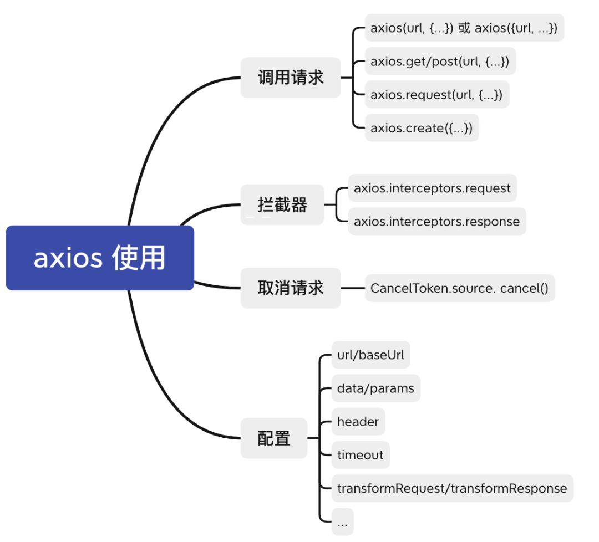
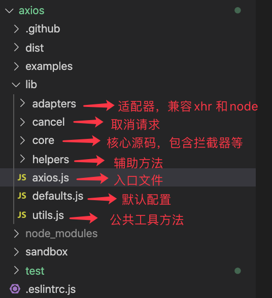
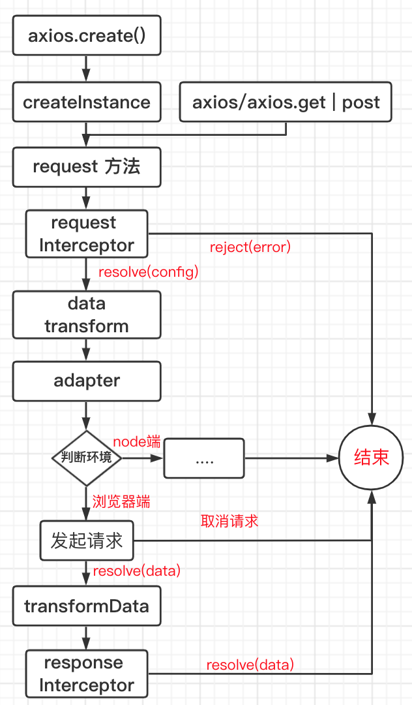
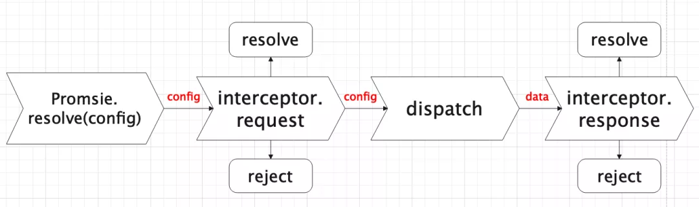
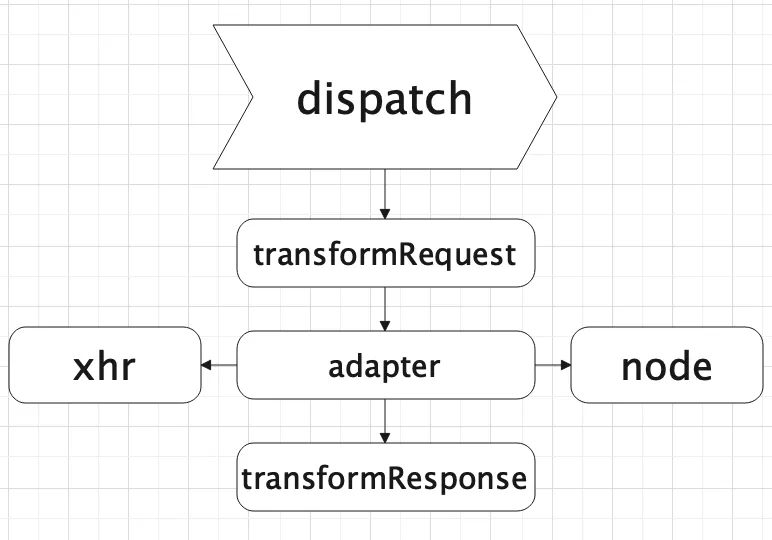
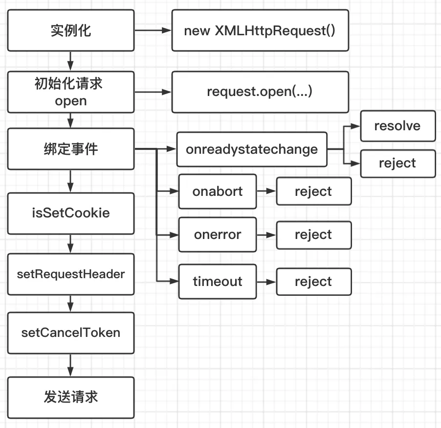

Axios 和 Fetch 分析
axios 源码解析
axios 是什么
- 基于 promise 封装的 http 请求库（避免回调地狱）
- 支持浏览器端和 node 端
- 丰富的配置项：数据转换器，拦截器等等
- 客户端支持防御 XSRF
- 生态完善（支持 Vue/React，周边插件等等）
基本使用

源码目录结构

执行流程
- axios.create 创建单独实例，或直接使用 axios 实例(axios/axios.get...)
- request 方法是入口，axios/axios.get 等调用都会走进 request 进行处理
- 请求拦截器
- 请求数据转换器，对传入的参数 data 和 header 做数据处理，比如 JSON.stringify(data)
- 适配器，判断是浏览器端还是 node 端，执行不同的方法
- 响应数据转换器，对服务端的数据进行处理，比如 JSON.parse(data)
- 响应拦截器，对服务端数据做处理，比如 token 失效退出登陆，报错 dialog 提示
- 返回数据给开发者

入口文件(lib/axios.js)
从下面这段代码可以得出，导出的 axios 就是 实例化后的对象 ，还在其上挂载 create 方法，以供创建独立实例，从而达到实例之间互不影响，互相隔离。
...
// 创建实例过程的方法
function createInstance(defaultConfig) {
return instance;
}
// 实例化
var axios = createInstance(defaults);
// 创建独立的实例，隔离作用域
axios.create = function create(instanceConfig) {
return createInstance(mergeConfig(axios.defaults, instanceConfig));
};
...
// 导出实例
module.exports = axios;
createInstance 方法
function createInstance(defaultConfig) {
// 实例化，创建一个上下文
var context = new Axios(defaultConfig);
// 平时调用的 get/post 等等请求，底层都是调用 request 方法
// 将 request 方法的 this 指向 context(上下文)，形成新的实例
var instance = bind(Axios.prototype.request, context);
// Axios.prototype 上的方法 (get/post...)挂载到新的实例 instance 上，
// 并且将原型方法中 this 指向 context
utils.extend(instance, Axios.prototype, context);
// Axios 属性值挂载到新的实例 instance 上
// 开发中才能使用 axios.default/interceptors
utils.extend(instance, context);
return instance;
}
从上面代码可以看得出，Axios 不是简单的创建实例 context，而且进行一系列的上下文绑定和属性方法挂载，从而去支持 axios()，也支持 axios.get() 等等用法；
大家可能对上面第 2 点 request 方法感到好奇，createInstance 方法明明可以写一行代码 return new Axios() 即可，为什么大费周章使用 request 方法绑定新实例，其实就只是为了支持 axios() 写法，开发者可以写少几行代码
默认配置(lib/defaults.js)
从 createInstance 方法调用发现有个默认配置，主要是内置的属性和方法，可对其进行覆盖
var defaults = {
...
// 请求超时时间，默认不超时
timeout: 0,
// 请求数据转换器
transformRequest: [function transformRequest(data, headers) {...}],
// 响应数据转换器
transformResponse: [function transformResponse(data) {...}],
...
};
...
module.exports = defaults;
构造函数 Axios(lib/core/Axios.js)
- 配置：外部传入，可覆盖内部默认配置
- 拦截器：实例后，开发者可通过 `use` 方法注册成功和失败的钩子函数，比如 `axios.intercept
function Axios(instanceConfig) {
// 配置
this.defaults = instanceConfig;
// 拦截器实例
this.interceptors = {
request: new InterceptorManager(),
response: new InterceptorManager()
};
}
原型方法 request 做了什么
- 支持多类型传参
- 配置优先级定义
- 通过 `promise` 链式调用，依次顺序执行
// 伪代码
Axios.prototype.request = function request(config) {
// 为了支持 request(url, {...}), request({url, ...})
if (typeof config === 'string') {
config = arguments[1] || {};
config.url = arguments[0];
} else {
config = config || {};
}
// 配置优先级： 调用方法的配置 > 实例化axios的配置 > 默认配置
// 举个例子，类似：axios.get(url, {}) > axios.create(url, {}) > 内部默认设置
config = mergeConfig(this.defaults, config);
// 拦截器（请求和响应）
var requestInterceptorChain = [{
fulfilled: interceptor.request.fulfilled,
rejected: interceptor.request.rejected
}];
var responseInterceptorChain = [{
fulfilled: interceptor.response.fulfilled,
rejected: interceptor.response.rejected
}];
var promise;
// 形成一个 promise 链条的数组
var chain = [].concat(requestInterceptorChain, chain, responseInterceptorChain);
// 传入配置
promise = Promise.resolve(config);
// 形成 promise 链条调用
while (chain.length) {
promise = promise.then(chain.shift(), chain.shift());
}
...
return promise;
};
通过对数组的遍历，形成一条异步的 promise 调用链，是 axios 对 promise 的巧妙运用，用一张图表示

拦截器 (lib/core/InterceptorManager.js)
上面说到的 promise 调用链，里面涉及到拦截器，拦截器比较简单，挂载一个属性和三个原型方法
- handler: 存放 use 注册的回调函数
- use: 注册成功和失败的回调函数
- eject: 删除注册过的函数
- forEach: 遍历回调函数，一般内部使用多，比如：promise 调用链那个方法里，循环遍历回调函数，存放到 promise 调用链的数组中
function InterceptorManager() {
// 存放 use 注册的回调函数
this.handlers = [];
}
InterceptorManager.prototype.use = function use(fulfilled, rejected, options) {
// 注册成功和失败的回调函数
this.handlers.push({
fulfilled: fulfilled,
rejected: rejected,
...
});
return this.handlers.length - 1;
};
InterceptorManager.prototype.eject = function eject(id) {
// 删除注册过的函数
if (this.handlers[id]) {
this.handlers[id] = null;
}
};
InterceptorManager.prototype.forEach = function forEach(fn) {
// 遍历回调函数，一般内部使用多
utils.forEach(this.handlers, function forEachHandler(h) {
if (h !== null) {
fn(h);
}
});
};
dispatchRequest(lib/core/dispatchRequest.js)
上面说到的 promise 调用链中的 dispatchRequest 方法，主要做了以下操作：
- transformRequest: 对 config 中的 data 进行加工，比如对 post 请求的 data 进行字符串化 （JSON.stringify(data)）
- adapter：适配器，包含浏览器端 xhr 和 node 端的 http
- transformResponse: 对服务端响应的数据进行加工，比如 JSON.parse(data)
dispatchRequest 局部图

module.exports = function dispatchRequest(config) {
...
// transformRequest 方法，上下文绑定 config，对 data 和 headers 进行加工
config.data = transformData.call(
config, // 上下文环境，即 this 指向
config.data, // 请求 body 参数
config.headers, // 请求头
config.transformRequest // 转换数据方法
);
// adapter 是一个适配器，包含浏览器端 xhr 和 node 端的 http
// 内置有 adapter，也可外部自定义去发起 ajax 请求
var adapter = config.adapter || defaults.adapter;
return adapter(config).then(function onAdapterResolution(response) {
// transformResponse 方法，上下文绑定 config，对 data 和 headers 进行加工
response.data = transformData.call(
config, // 上下文环境，即 this 指向
response.data, // 服务端响应的 data
response.headers, // 服务端响应的 headers
config.transformResponse // 转换数据方法
);
return response;
}, function onAdapterRejection(reason) {
...
return Promise.reject(reason);
});
};
数据转换器(lib/core/transformData.js)
module.exports = function transformData(data, headers, fns) {
var context = this || defaults;
// fns：一个数组，包含一个或多个方法转换器方法
utils.forEach(fns, function transform(fn) {
// 绑定上下文 context，传入 data 和 headers 参数进行加工
data = fn.call(context, data, headers);
});
return data;
};
fns 方法即（请求或响应）数据转换器方法，在刚开始 defaults 文件里定义的默认配置，也可外部自定义方法，源码如下：
Axios(lib/defaults.js)
var defaults = {
...
transformRequest: [function transformRequest(data, headers) {
// 对外部传入的 headers 进行规范纠正,比如 (accept | ACCEPT) => Accept
normalizeHeaderName(headers, 'Accept');
normalizeHeaderName(headers, 'Content-Type');
...
if (utils.isObject(data) || (headers && headers['Content-Type'] === 'application/json')) {
// post/put/patch 请求携带 data，需要设置头部 Content-Type
setContentTypeIfUnset(headers, 'application/json');
// 字符串化
return JSON.stringify(data);
}
return data;
}],
transformResponse: [function transformResponse(data) {
...
try {
// 字符串解析为 json
return JSON.parse(data);
} catch (e) {
...
}
return data;
}],
}
可以看得出，（请求或响应）数据转换器方法是存放在数组里，可定义多个方法，各司其职，通过遍历器对数据进行多次加工，有点类似于 node 的管道传输 src.pipe(dest1).pipe(dest2)
适配器(lib/defaults.js)
主要包含两部分源码，即浏览器端 xhr 和 node 端的 http 请求，通过判断环境，执行不同端的 api。
function getDefaultAdapter() {
var adapter;
if (typeof XMLHttpRequest !== 'undefined') {
// 浏览器
adapter = require('./adapters/xhr');
} else if (typeof process !== 'undefined' && Object.prototype.toString.call(process) === '[object process]') {
// node
adapter = require('./adapters/http');
}
return adapter;
}
对外提供统一 api，但底层兼容浏览器端和 node 端，类似 sdk，底层更改不影响上层 api，保持向后兼容
发起请求(lib/adapters/xhr.js)
平时用得比较多的是浏览器端，这里只讲 XMLHttpRequest 的封装，node 端有兴趣的同学自行查看源码(lib/adapters/http.js)

源码比较长，使用伪代码表示重点部分
module.exports = function xhrAdapter(config) {
return new Promise(function dispatchXhrRequest(resolve, reject) {
...
// 初始化一个 XMLHttpRequest 实例对象
var request = new XMLHttpRequest();
// 拼接url，例如：https://www.baidu,com + /api/test
var fullPath = buildFullPath(config.baseURL, config.url);
// 初始化一个请求，拼接url，例如：https://www.baidu,com/api/test + ?a=10&b=20
request.open(config.method.toUpperCase(), buildURL(fullPath, config.params, config.paramsSerializer), true);
// 超时断开，默认 0 永不超时
request.timeout = config.timeout;
// 当 readyState 属性发生变化时触发，readyState = 4 代表请求完成
request.onreadystatechange = resolve;
// 取消请求触发该事件
request.onabort = reject;
// 一般是网络问题触发该事件
request.onerror = reject;
// 超时触发该事件
request.ontimeout = reject;
// 标准浏览器(有 window 和 document 对象)
if (utils.isStandardBrowserEnv()) {
// 非同源请求，需要设置 withCredentials = true，才会带上 cookie
var xsrfValue = (config.withCredentials || isURLSameOrigin(fullPath)) && config.xsrfCookieName ?
cookies.read(config.xsrfCookieName) :
undefined;
if (xsrfValue) {
requestHeaders[config.xsrfHeaderName] = xsrfValue;
}
}
// request对象携带 headers 去请求
if ('setRequestHeader' in request) {
utils.forEach(requestHeaders, function setRequestHeader(val, key) {
if (typeof requestData === 'undefined' && key.toLowerCase() === 'content-type') {
// data 为 undefined 时，移除 content-type，即不是 post/put/patch 等请求
delete requestHeaders[key];
} else {
request.setRequestHeader(key, val);
}
});
}
// 取消请求，cancelToken 从外部传入
if (config.cancelToken) {
// 等待一个 promise 响应，外部取消请求即执行
config.cancelToken.promise.then(function onCanceled(cancel) {
request.abort();
reject(cancel);
// Clean up request
request = null;
});
}
// 发送请求
request.send(requestData);
});
};
取消请求(lib/cancel/CancelToken.js)
var CancelToken = axios.CancelToken;
var source = CancelToken.source();
axios.get('/user/12345', {
cancelToken: source.token
}).catch(function(thrown) {
if (axios.isCancel(thrown)) {
console.log('Request canceled', thrown.message);
} else {
// 处理错误
}
});
// 取消请求（message 参数是可选的）
source.cancel('Operation canceled by the user.');
可以猜想，CancelToken 对象挂载有 source 方法，调用 source 方法返回 {token, cancel}，调用函数 cancel 可取消请求，但 axios 内部怎么知道取消请求，只能通过 { cancelToken: token } ，那 token 跟 cancel 必然有某种联系
看看源码这段话
- `CancelToken` 挂载 `source` 方法用于创建自身实例，并且返回 `{token, cancel}`
- `token` 是构造函数 `CancelToken` 的实例，`cancel` 方法接收构造函数 `CancelToken` 内部的一个 `cancel` 函数，用于取消请求
- 创建实例中，有一步是创建处于 `pengding` 状态的 `promise`，并挂在实例方法上，外部通过参数 `cancelToken` 将实例传递进 `axios` 内部，内部调用 `cancelToken.promise.then` 等待状态改变
- 当外部调用方法 `cancel` 取消请求，`pendding` 状态就变为 `resolve`，即取消请求并且抛出 `reject(message)`
function CancelToken(executor) {
var resolvePromise;
/**
* 创建处于 pengding 状态的 promise，将 resolve 存放在外部变量 resolvePromise
* 外部通过参数 { cancelToken: new CancelToken(...) } 传递进 axios 内部，
* 内部调用 cancelToken.promise.then 等待状态改变，当外部调用方法 cancel 取消请求，
* pendding 状态就变为 resolve，即取消请求并且抛出 reject(message)
*/
this.promise = new Promise(function promiseExecutor(resolve) {
resolvePromise = resolve;
});
// 保留 this 指向，内部可调用
var token = this;
executor(function cancel(message) {
if (token.reason) {
// 取消过的直接返回
return;
}
// 外部调用 cancel 取消请求方法，Cancel 实例化，保存 message 并增加已取消请求标示
// new Cancel(message) 后等于 { message, __CANCEL__ : true}
token.reason = new Cancel(message);
// 上面的 promise 从 pedding 转变为 resolve,并携带 message 传递给 then
resolvePromise(token.reason);
});
}
// 挂载静态方法
CancelToken.source = function source() {
var cancel;
/**
* 构造函数 CancelToken 实例化，用回调函数做参数，并且回调函数
* 接收 CancelToken 内部的函数 c，保存在变量 cancel 中，
* 后面调用 cancel 即取消请求
*/
var token = new CancelToken(function executor(c) {
cancel = c;
});
return {
token: token,
cancel: cancel
};
};
module.exports = CancelToken;
总结
- 为了支持 axios() 简洁写法，内部使用 request 函数作为新实例
- 使用 promsie 链式调用的巧妙方法，解决顺序调用问题
- 数据转换器方法使用数组存放，支持数据的多次传输与加工
- 适配器通过兼容浏览器端和 node 端，对外提供统一 api
- 取消请求这块，通过外部保留 pendding 状态，控制 promise 的执行时机